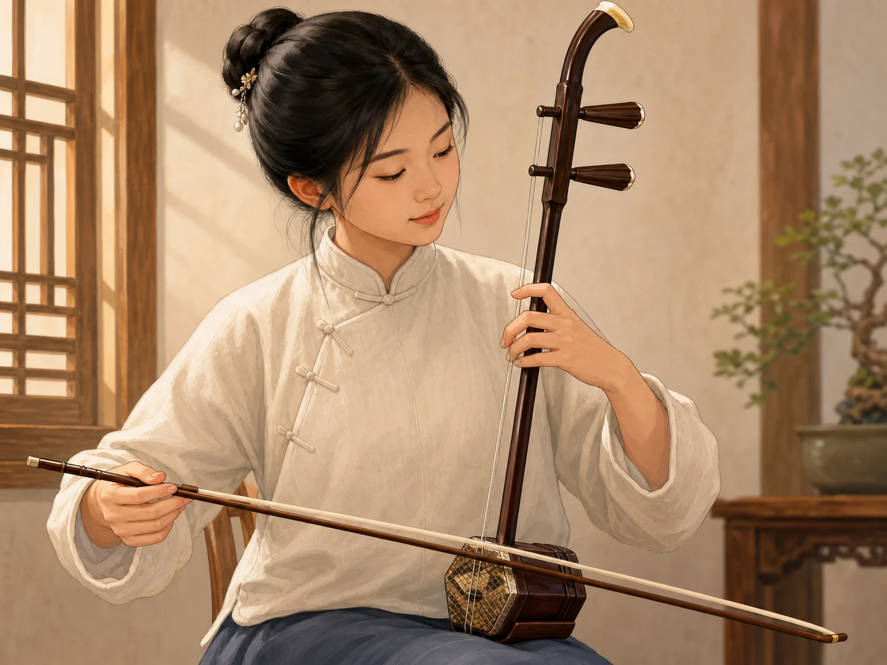
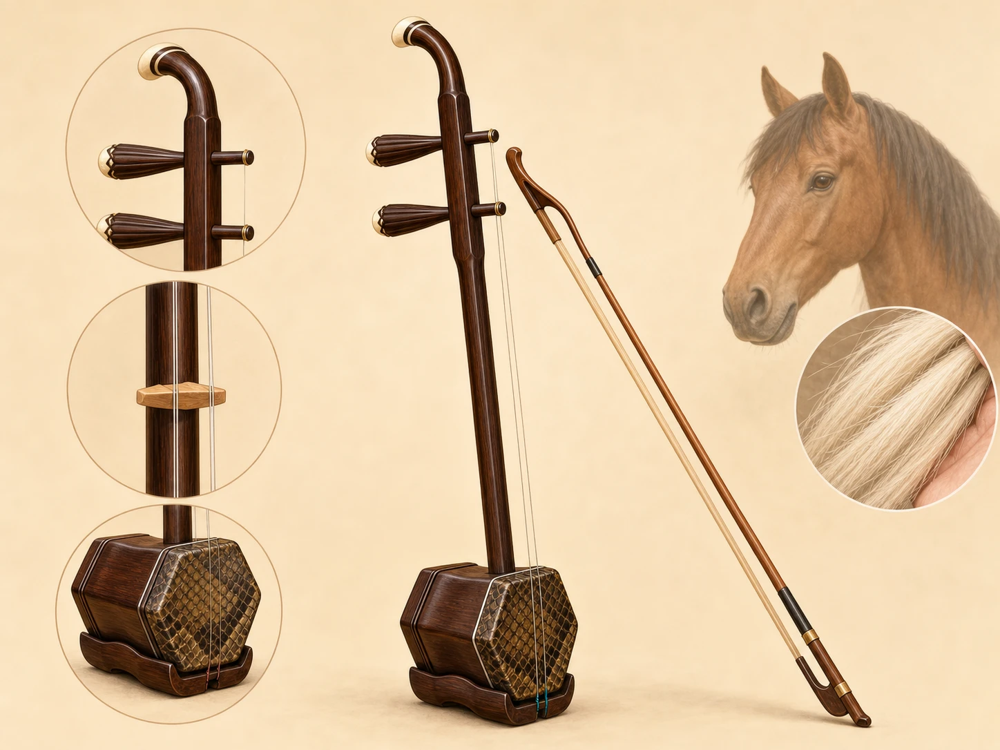

没有指板，二胡怎样找到音？
No Fingerboard - How Does an Erhu Find Its Notes?
阅读难度 · 中等Reading level · Medium
Page 1
手指按下去，下面却是空气
Your Finger Presses Down - and Finds Only Air

This is a modern illustration of erhu playing. The instrument rests upright on the leg, with the left hand on the strings and the right hand moving the bow. The player and room do not show a documented historical performance.
先看左手。小提琴手把弦压到木制指板上，吉他手还可以寻找一格格品柱；二胡手指下面却没有板，只有悬在空中的两根弦。手指究竟怎样知道一个音藏在哪里？
答案不是“看见一个记号”，而是同时使用位置、触觉和耳朵。左手在弦上的位置改变振动部分的长度：按得越靠近琴筒，能振动的弦越短，音通常越高。二胡没有固定音格，手指差一点，音高就可能差一点，所以演奏者要反复听、调整，再让手记住距离。
如果老师或演奏者愿意示范，你可以从侧面观察手指是不是把弦按到琴杆上。不要自己拆弓、松弦或移动琴码；琴弓的弓毛本来就穿在两弦之间，琴码和琴皮也需要正确张力。最好的第一步不是拆开它，而是用眼睛追踪：右手拉弓时，哪根弦在振动？左手移动后，声音怎样改变？
Watch the left hand first. A violinist presses strings against a wooden fingerboard, and a guitarist can look for rows of frets. An erhu player has neither. Beneath the fingers are just two strings hanging in the air. So how does a finger know where a note is hiding?
The answer is a mix of position, touch, and careful listening. Moving a finger changes the length of string that can vibrate. Press closer to the sound box, and the vibrating part becomes shorter, so the pitch is usually higher. With no fixed frets, a tiny change in finger position can change the note. Players listen, adjust, and practice until their hands remember the distances.
If a teacher or musician is willing to demonstrate, watch from the side. Do the fingers ever press a string all the way against the neck? Do not loosen the strings, move the bridge, or take the bow apart. Its hair is meant to run between the two strings, and the bridge and membrane need the right tension. The best first experiment is simply to watch: Which string vibrates as the right hand moves? What happens when the left hand shifts?
Page 2
两根弦、一个琴筒，怎样放大声音？
How Do Two Strings and a Small Box Make a Big Sound?

This modern parts diagram shows two strings, the bridge, the covered sound box, and bow hair. The horse suggests a traditional bow-hair material; it is not an ancient workshop scene and does not prove that the erhu “came from horses.”
二胡的弓有一个少见的结构：弓毛从两根弦中间穿过。右手向一个方向用力时，弓毛擦动一根弦；换一种推拉和压力，就能擦动另一根。弓毛上涂的松香增加摩擦，帮助弓“抓住”弦，让弦来回振动。传统弓毛常用马尾毛，但“使用马尾”不等于“二胡的一半是马”，更不能说明它天生只能表现草原或悲伤。
弦本身发出的声音很小。它的振动经过小小的琴码传到琴筒前面的薄膜，薄膜推动空气，琴筒也参与共鸣，声音才变得更响、更有颜色。左手的滑动、揉动，右手的速度、方向和压力，都能改变音头、强弱和音色。
于是，两根弦并不等于只有两种声音。没有品格和指板，演奏者可以在音与音之间连续滑动，也可以做细小的音高摇动。二胡有时像歌唱，不是因为它真的模仿某一种人的声音，而是因为演奏者能像歌手一样塑造一个音怎样开始、转弯和离开。
The erhu bow has an unusual design: its hair passes between the two strings. With one kind of pull and pressure, the hair rubs one string. With a different push and pressure, it catches the other. Rosin on the bow hair adds friction, helping the bow grip the string and set it vibrating. Traditional bow hair is often horsehair, but that does not mean “half the erhu is a horse,” or that the instrument can only sound lonely or remind people of grasslands.
A string by itself makes a small sound. Its vibration travels through a tiny bridge to the thin membrane on the front of the sound box. The membrane pushes the air, while the box helps shape and strengthen the sound. A player can change the beginning, loudness, and color of a note by adjusting the left-hand motion and the right hand’s speed, direction, and pressure.
Two strings do not mean only two sounds. With no frets or fingerboard, a player can glide smoothly between pitches or make a note gently waver. The erhu can sometimes feel like singing - not because it copies one particular human voice, but because a musician can shape how each note begins, bends, and fades.
Page 3
“胡琴”是一个大家族，不是一把两千年没变的琴
Huqin Is a Family, Not One Instrument Frozen for 2,000 Years
古书里很早就出现过“奚琴”“嵇琴”“胡琴”等名称，也记下两弦、竹片擦弦或马尾弓等做法。它们能帮助研究者追踪中国拉弦乐器的历史，可是同一个名字在不同时代可能指不同东西，形状相像也不等于就是今天的二胡。把唐宋文字里的每一种“胡琴”直接叫作现代二胡，就像把古代所有有轮子的车都叫作今天的自行车。
今天，“胡琴”通常是中国拉弦乐器的家族名。二胡、京胡、板胡、高胡等都是亲戚，却有不同的琴筒、蒙面材料、音域、音色和使用场合。京胡常与京剧相连，板胡在多种北方戏曲和地方音乐里很重要，高胡则与广东音乐关系密切。它们不是把同一件乐器换个名字，也不能用一把二胡代表所有地方戏曲。
“二胡”这个名称和今天熟悉的独奏乐器形象，主要在近现代逐渐稳定。1923年的乐器介绍已经把有两弦、弓毛在弦间的琴称作“胡琴”，又称“二胡”；1928年，刘天华写道，二胡又名南胡，是胡琴的一种。这个名字的历史提醒我们：乐器不是从某一天开始就永远不变，而是在地方演出、工匠改造、教学和新作品中慢慢定形。
Old Chinese texts use names such as xiqin, jiqin, and huqin. Some describe two strings, a strip of bamboo rubbing the strings, or a horsehair bow. These clues help researchers trace the history of bowed instruments in China. But one name could mean different things in different centuries, and a similar shape does not make an old instrument the modern erhu. Calling every old huqin an erhu would be like calling every ancient wheeled vehicle a modern bicycle.
Today, huqin usually means a large family of Chinese bowed instruments. The erhu, jinghu, banhu, and gaohu are relatives, but their sound boxes, membranes, ranges, tone colors, and musical jobs differ. The jinghu is closely connected with Beijing opera. The banhu is important in several northern opera and regional traditions, while the gaohu is strongly linked to Cantonese music. They are not one instrument with several nicknames, and one erhu cannot stand in for every regional style.
The name “erhu” and the familiar image of a concert solo instrument became settled mainly in modern times. A 1923 instrument guide described a two-stringed instrument with bow hair between the strings as huqin, also called erhu. In 1928, musician Liu Tianhua wrote that the erhu, also called nanhu, was one kind of huqin. This history gives us a better picture: instruments do not appear one day and stay unchanged forever. Local performers, makers, teachers, and new music reshape them over time.
Page 4
刘天华没有“发明”二胡，他让一种现代道路变得清楚
Liu Tianhua Did Not “Invent” the Erhu - He Helped Build a Modern Path
20世纪初，二胡早已在民间音乐、戏曲和合奏中使用。刘天华不是它唯一的发明人，却在二胡进入现代学校、独奏舞台和印刷曲谱的过程中起了关键作用。1922年，他到北京大学音乐机构任教；后来又创办国乐改进社、编辑音乐刊物，并尝试把中国音乐经验与他学到的其他作曲和教学方法放在一起。
他写下十首二胡独奏曲和数十首练习曲。练习曲听起来或许不如舞台作品耀眼，却解决了一个实际问题：学生如何从基本运弓、换把和音准，一步步学到更复杂的音乐？当指法可以讲解、练习可以排序、作品可以印下来传给远方学生，二胡便更容易成为一门可以系统学习的专业。
这条道路并不只属于一个人。地方艺人、戏曲乐师、制琴工匠、教师、作曲家和学生都在改变二胡的形制、声音和曲目。称刘天华为重要的作曲家、演奏家和教育家，比说他“凭一人发明现代二胡”更准确，也更能让我们看见传统怎样靠许多人继续生长。
By the early 1900s, the erhu was already used in folk music, opera, and ensembles. Liu Tianhua did not invent it by himself. What he did was help the erhu enter modern schools, printed music, and the solo stage. In 1922, he began teaching at a music program connected with Peking University. He later founded a society for improving Chinese music, edited a music journal, and brought Chinese musical knowledge into conversation with other methods of composing and teaching that he had studied.
Liu wrote ten erhu solos and dozens of exercises. Exercises may sound less exciting than concert pieces, but they solved a real problem: How could a student move step by step from basic bowing and accurate notes to harder music? Once fingerings could be explained, lessons could be arranged in order, and scores could travel to students far away, the erhu became easier to study as a full professional subject.
That change did not belong to one person. Regional musicians, opera players, instrument makers, teachers, composers, and students all helped reshape the erhu’s form, sound, and music. Calling Liu an important composer, performer, and teacher is more accurate than saying he single-handedly invented the modern erhu. It also lets us see how a tradition grows through many hands.
Page 5
1950年，一台录音机留下了阿炳的演奏
In 1950, a Recorder Preserved Abing’s Playing

This is a modern imagined picture based on Abing’s public image, not a photograph of the 1950 recording. The moon, canal alley, location, clothing, and pose are not evidence of how Moon Reflected on the Second Spring was created.
华彦钧（1893 - 1950），人们常叫他阿炳，是无锡的民间音乐家。他从小学习道教音乐和多种乐器，后来也靠街头演奏维持生活；成年后因眼疾失明。贫困和失明给他的生活带来重重障碍，却不是音乐天赋的神秘来源。他的演奏来自长期学习、地方音乐环境、工作经验和个人创造。
1950年9月，音乐研究者杨荫浏和曹安和到无锡，用钢丝录音机为阿炳录音。他们留下六首乐曲：三首二胡曲《二泉映月》《听松》《寒春风曲》，以及三首琵琶曲。杨荫浏等人随后依据录音记谱、整理和研究。录音保存了速度、音色和细微变化，乐谱则让更多演奏者能够阅读、学习和再创造；两种记录互相帮助，却都不能等同于阿炳本人在场的一次演奏。
关于录音先后、曲名怎样决定等细节，不同亲历者后来留下过不完全相同的回忆。因此，可靠的故事不需要补写“月下巷口即兴作曲”或研究者“苦苦请求”的电影场面。真正动人的事实已经足够：一位地方音乐家的声音，因为演奏者、研究者和保存档案的人共同工作，越过他的生命，继续被后人听见。
Hua Yanjun (1893 - 1950), usually called Abing, was a folk musician from Wuxi. As a child, he learned Daoist music and several instruments. Later, street performance became one way he earned a living, and an eye illness caused him to lose his sight as an adult. Poverty and blindness created serious barriers in his life, but they were not a magical source of musical talent. His playing grew from years of learning, local musical traditions, work, and creativity.
In September 1950, music researchers Yang Yinliu and Cao Anhe came to Wuxi and recorded Abing on a wire recorder. They preserved six pieces: three for erhu - Moon Reflected on the Second Spring, Listening to the Pines, and Cold Spring Wind - and three for pipa. Yang and other musicians then used the recordings to write, edit, and study scores. A recording keeps speed, tone, and tiny changes that notation cannot fully catch. A score lets more performers read, learn, and make new interpretations. The two records help each other, but neither is the same as hearing Abing play live.
People who witnessed the sessions later remembered some details - such as the order of recording and how a title was chosen - differently. A trustworthy story therefore does not need a movie scene in which Abing invents the piece alone in a moonlit alley or researchers beg him to play. The documented story is already powerful: a local musician’s sound traveled beyond his lifetime because performers, researchers, and archivists worked together to preserve it.
Page 6
琴皮也提出了一个今天的问题
The Membrane Raises a Question for Today
传统二胡的琴筒前面常蒙蟒皮。它既是材料，也是发声系统的一部分：弦把振动送到琴码，琴码再让这层薄膜振动。可是蟒是受野生动物保护和国际贸易规则管理的动物，含蟒皮的二胡在购买、携带或跨国寄送时可能需要合法来源证明和进出口许可。孩子和家庭不要因为故事里说“传统”就随意购买来历不明的动物皮乐器。
保护动物不等于停止做音乐。香港中乐团等机构已经研究用可再生PET薄膜替代蟒皮的环保胡琴；研究者和制琴者也在比较人工膜的振动、耐用性和声音。替代材料不是把旧声音简单复制一遍，它会带来新的制作和调音问题，但也让音乐传统能够回应今天的环境责任。
现在再看那根没有指板的弦。演奏者靠听觉与反复练习找到音，制琴者也靠测试与调整寻找合适的材料和结构。二胡的故事并不是“两根弦从古到今从未改变”，而是许多人一直在问同一个好问题：怎样让这件乐器在新的时代继续发出有生命的声音？
The front of a traditional erhu sound box is often covered with python skin. It is not just decoration; it is part of the sound system. The strings send vibration through the bridge, and the bridge makes this thin membrane move. But pythons are covered by wildlife-protection and international-trade rules. Buying, carrying, mailing, or taking a python-skin erhu across a border may require proof that it came from a legal source and the correct permits. Children and families should not buy an instrument made with unknown animal skin just because it is called “traditional.”
Protecting wildlife does not mean that music must stop. The Hong Kong Chinese Orchestra and other groups have tested eco-huqin instruments with renewable PET membranes instead of python skin. Researchers and makers are also comparing how synthetic membranes vibrate, last, and sound. A new material does not copy an old sound automatically. It brings new questions about building and tuning, but it also helps a musical tradition respond to today’s environmental responsibilities.
Now look once more at the string with no fingerboard. A player finds notes by listening, testing, and adjusting. Instrument makers search for good materials and structures in much the same way. The erhu’s story is not “two strings that never changed for thousands of years.” It is a long line of people asking one useful question: How can this instrument keep making a living sound in a new time?
小结
In Summary
二胡用两根悬空的弦、夹在弦间的弓毛、琴码、薄膜和琴筒一起发声。没有指板，音准不是被画在琴上的答案，而是演奏者用耳朵、手感和练习一次次找到的。
它属于变化丰富的胡琴家族，现代名称、形制、教学和独奏曲目在近现代逐渐形成。刘天华的教育和创作、阿炳的演奏、1950年的录音与记谱、今天对替代琴皮的研究，都是这段仍在继续的故事。
The erhu makes sound with two strings hanging in the air, bow hair between them, a bridge, a membrane, and a sound box working together. With no fingerboard, accurate pitch is not an answer drawn on the instrument. Players find it again and again through listening, touch, and practice.
The erhu belongs to the varied huqin family, and its modern name, form, teaching, and solo music developed mostly in recent times. Liu Tianhua’s teaching and compositions, Abing’s playing, the recording and notation work of 1950, and today’s search for new membrane materials are all parts of a story that is still unfolding.